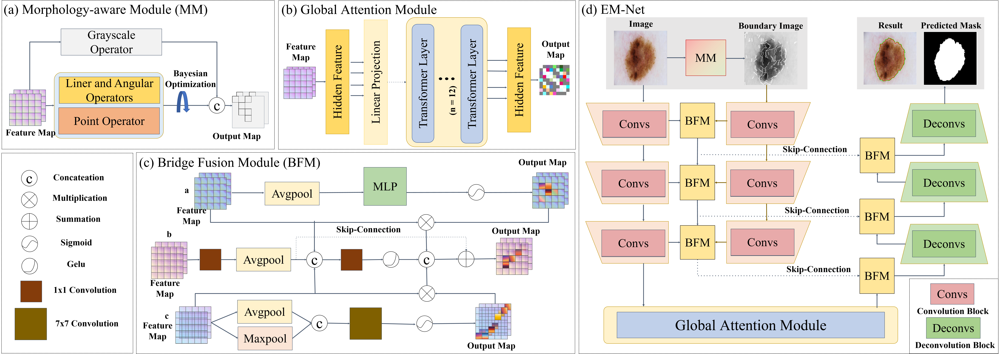
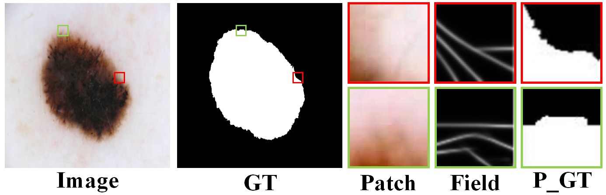
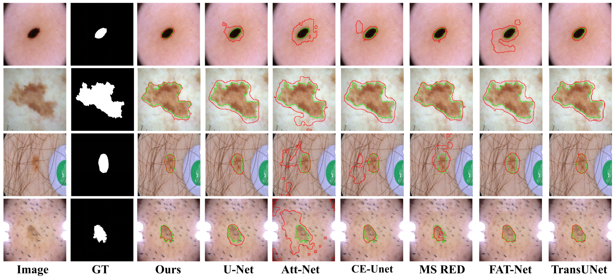
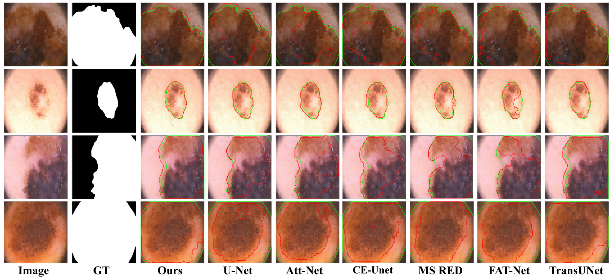
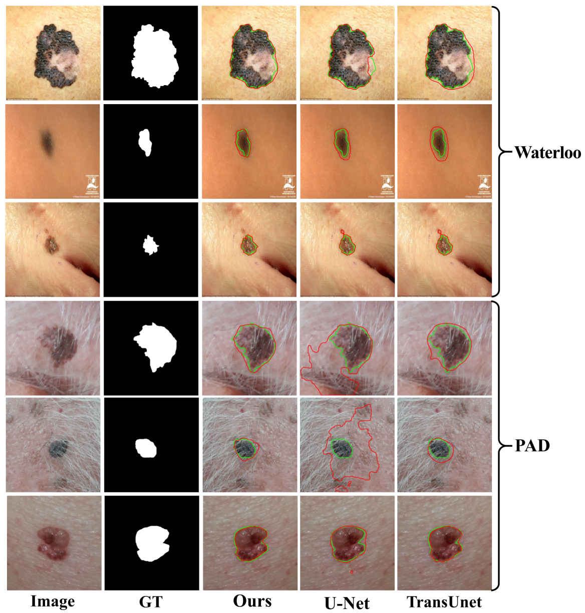

Dermoscopic images are essential for diagnosing various skin diseases, as they enable physicians to observe subepidermal structures, dermal papillae, and deeper tissues otherwise invisible to the naked eye. However, segmenting lesions in these images is challenging due to their irregular boundaries and significant variability in lesion characteristics.
We propose an effective and morphology-aware network that utilizes a hybrid feature extractor combining CNN and ViT architectures. EM-Net introduces a boundary delineation component based on non-convex optimization to learn general representations and accurately delineate lesion boundaries, enhancing detail extraction.
The model also integrates a few-shot domain generalization module to improve adaptability across datasets. Validation on publicly available dermoscopic image datasets, including ISIC, PH², PAD-UFES-20, and the University of Waterloo skin cancer database, demonstrates state-of-the-art performance in Dice, Acc, Pre, IoU, and Re.

The EM-Net framework includes the Morphology-aware Module, Global Attention Module, Bridge Fusion Module, and the main segmentation network.

The Morphology-aware Module captures structural details in dermoscopic images and helps EM-Net better preserve lesion boundaries during segmentation.

ISIC Dataset

ISIC 2016 + PH²

Mobile Phone Dataset
@article{zhu2025emnet,
title={EM-Net: Effective and morphology-aware network for skin lesion segmentation},
author={Zhu, Kaiwen and Yang, Yuezhe and Chen, Yonglin and Feng, Ruixi and Chen, Dongping and Fan, Bingzhi and Liu, Nan and Li, Ying and Wang, Xuewen},
journal={Expert Systems with Applications},
volume={285},
pages={127668},
year={2025},
doi={10.1016/j.eswa.2025.127668},
publisher={Elsevier}
}